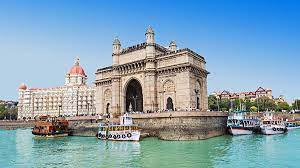

MUMBAI, MAHARASHTRA

Mumbai (English:bombay Marathi: ['mumbai]; also known as Bombay the official name until 1995) is the capital city of the Indian state of Maharashtra. Mumbai is the de facto financial centre and the most populous city of India with an estimated city proper population of 12.5 million (1.25 crore). Mumbai is the centre of the Mumbai Metropolitan Region, the sixth most populous metropolitan area in the world with a population of over 23 million (2.3 crore) living under the Brihanmumbai Municipal Corporation. Mumbai lies on the Konkan coast on the west coast of India and has a deep natural harbour. In 2008, Mumbai was named an alpha world city.
The seven islands that constitute Mumbai were earlier home to communities of Marathi language-speaking Koli people.For centuries, the seven islands of Bombay were under the control of successive indigenous rulers before being ceded to the Portuguese Empire, and subsequently to the East India Company in 1661, through the dowry of Catherine Braganza when she was married off to Charles II of England. During the mid-18th century, Mumbai was reshaped by the Hornby Vellard project,[24] which undertook reclamation of the area between the seven islands from the sea.